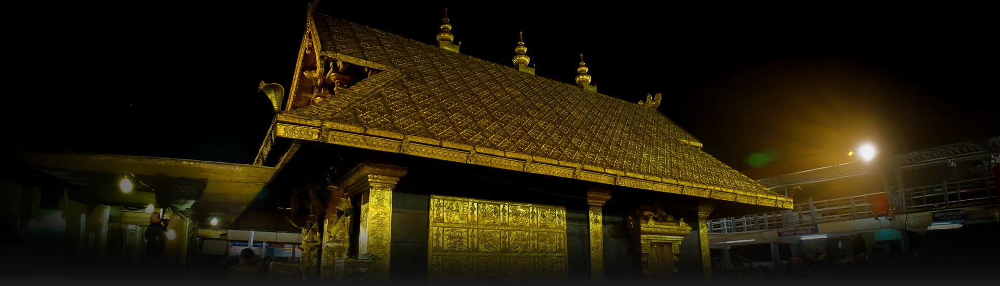
Sacred journeys to Achan Kovil, Sabarimala, Aryankavu & Kulathupuzha Sastha Temples through the Western Ghats — with experienced pilgrimage drivers who know every forest road.
Choose from our carefully planned one-day and multi-day pilgrimage packages, or request a custom itinerary.
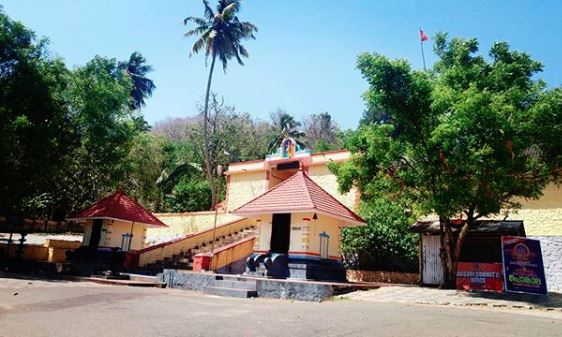
One Day PackageA comfortable one-day round trip to Achan Kovil Sastha Temple, departing early morning and returning by night.
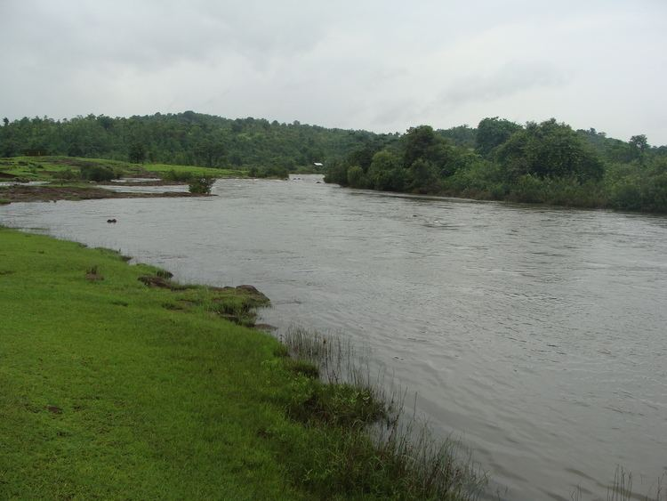
Two Day PackageA relaxed two-day pilgrimage with an overnight halt, ideal for elderly devotees and larger family groups.
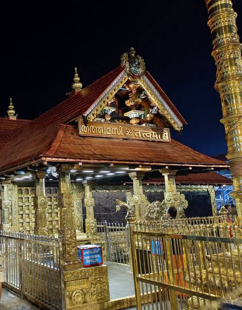
One Day PackageA dedicated one-day cab service for Sabarimala pilgrims, timed around trekking and darshan schedules.
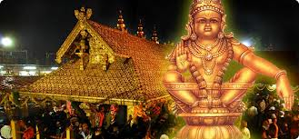
Two Day PackageA comfortable two-day Sabarimala pilgrimage tour with overnight rest for a peaceful darshan experience.
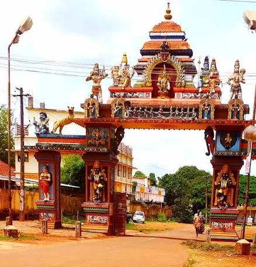
Multi-Temple PackageThe complete Sastha temple circuit — Kulathupuzha, Aryankavu and Achan Kovil — in a single well-planned trip.
Visit all three sacred Sastha temples of the Western Ghats in one seamless, well-planned journey.
Kulathupuzha Sastha Temple — Bala Ganapathy & child-form Ayyappa shrine
StartAryankavu Sastha Temple — forest shrine along the ancient pilgrimage trail
~18 km from KulathupuzhaAchan Kovil Sastha Temple — gateway to the Sabarimala forest route
~22 km from AryankavuAchan Kovil Sastha Temple, Western Ghats hills, forest temple roads and Kerala pilgrimage lighting.
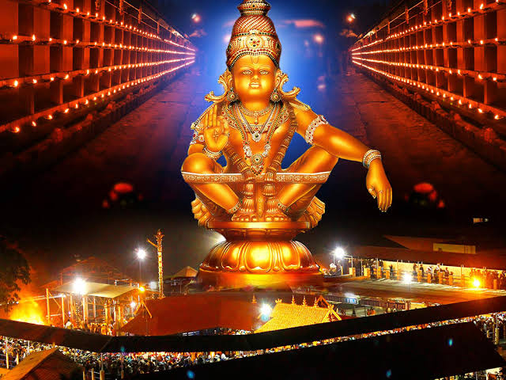
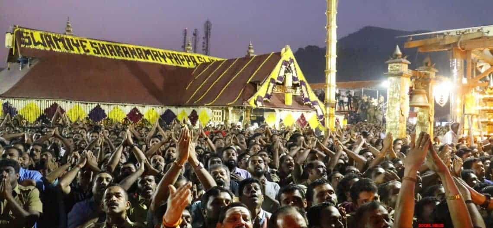
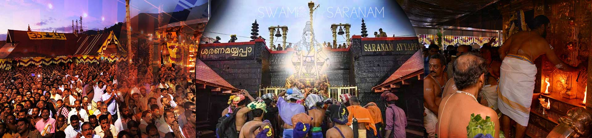
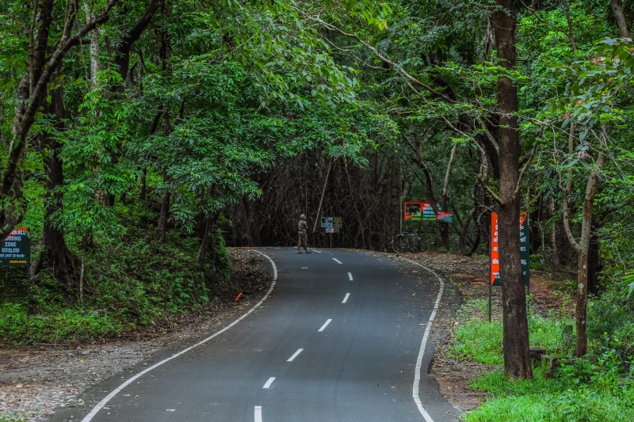
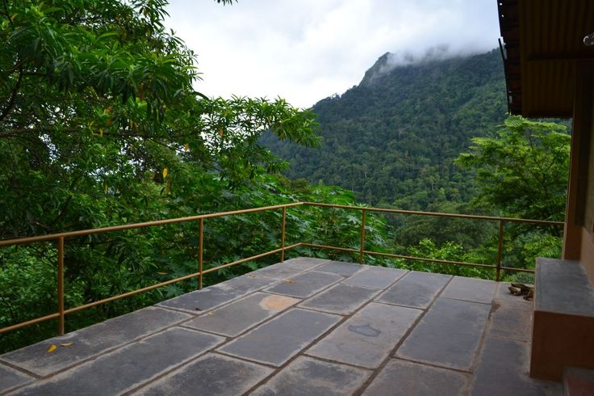
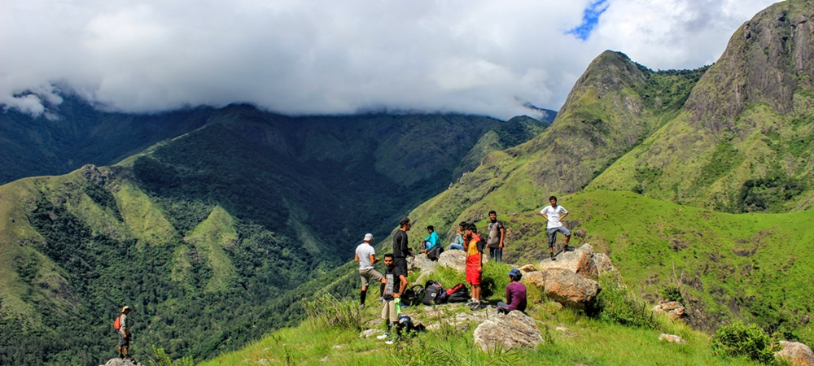
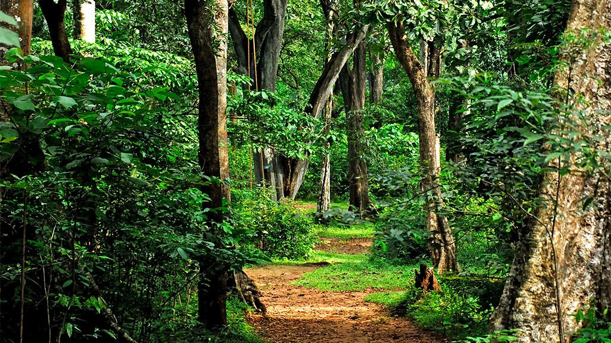